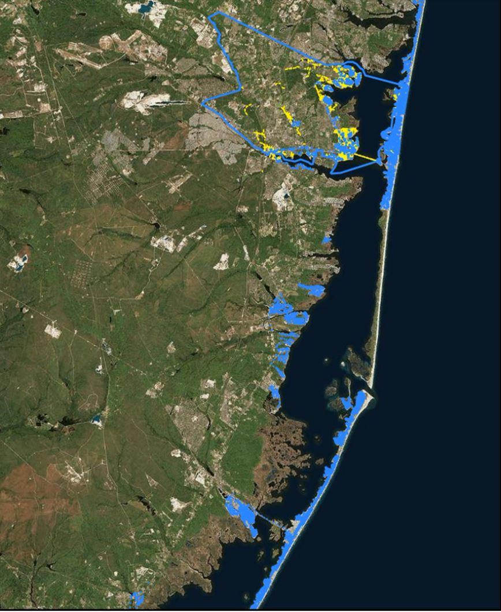
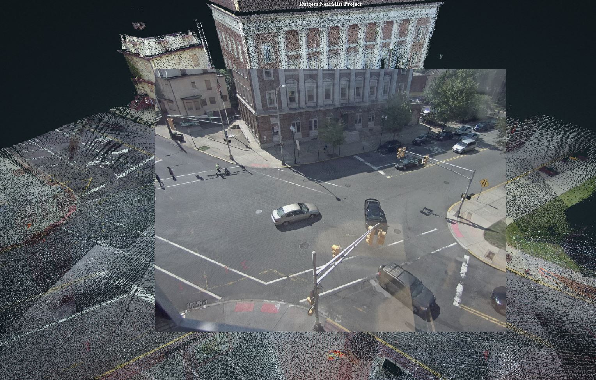

Research Projects
2016.01 - Now
Hurricane Ready Cloud (HRC): Develop a Data infrastructure for disaster-related big spatial data sets
• Collected and processed over 25 TB of disaster data (Mobile LiDAR, Field Survey and Drone Imagery) for three hurricanes events (Hurricane Sandy, Hurricane Harvey, and Hurricane Michael) and organized the data into databases.
• Developed the Hurricane Ready Cloud (HRC) portal, configured it on the AWS, and developed the functionality designed in HRC portal (e.g., Inundation Risk Information System (IRIS), Image-based Elevation Extraction, View Your Risk, and Future Hurricane Impact Analysis).
• Developed large-scale property elevation extraction system and verified the efficiency of the system with official Elevation Certificates (ECs) document on NJ shoreline properties.
• Developed and verified the cloud-based virtual hurricane damage assessment with 553 structural damage assessments on Hurricane Harvey data sets.
2020 Spring - Now
NJ Transit: Use of UV for Public Transit Sterilization during COVID19
•Collected, processed raw static LiDAR data, and generated Revit model for NJ Transit Train and Buses.
• Publicized a project website for 3D UV model visualization and data access for research teams.
LiDAR Assisted Bus Sanitization Modeling and Optimization
{kind=link}
{kind=link}
{kind=link}
{kind=link}
2020.01 - 2020.06
Research Intern | Bentley Systems & NSF
• Collected, processed, and organized Mobile LiDAR (point cloud and panoramic imagery) from NJ coastline.
• Labeled and Trained over 1800 Mobile Imagery from NJ coastline with VoTT
• Detected single family houses and extract property structure information(Front Door, Stairs, Garage) from street view imagery using Deep Learning (YOLO v3).
• Extracted property elevation data by linking labeled Mobile street view imagery with LiDAR point cloud.
• Created a model to automatically extract coastal property elevation information for large-scale flood risk analysis purpose.
{kind=link}
2020 Spring
Web-based LiDAR Image Fusion for Point Cloud Classification
• Mobile LiDAR Imagery to LiDAR Calibration
• Street View Imagery Classification
• LiDAR point cloud classification

2019 Fall - 2020 Spring
Vehicle Trajectory Detection From CCTV Traffic Camera Assisted By 3D Infrastructure Model
• New Brunswick Mobile LiDAR Collection, Pre-processing
• Raw CCTV Camera Processing: Camera Calibration, Undistortion and Cleaning with python and ffmpeg
• Web-based CCTV Camera to LiDAR Projection, 2D-3D Calibration with Python and Javascript
New Brunswick Traffic Detection Result{kind=link}
{kind=link}

{kind=link}
2018 Fall - Now
Hurricane Micheal Damage Assessment
• Mobile LiDAR Collection, Processing
• SFM-based Drone Imagery processing
• Cloud-based (AWS) Data Visualization Platform Development
{kind=link}
2017 Fall - 2019 Spring
Hurricane Harvey Damage Assessment
• Mobile LiDAR Data Processing
• Ladybug 360 Panorama Imagery Processing
• Cloud-based (AWS) Harvey Data Visualization Platform Development
{kind=link}
2016 - 2018
FEMA: Post-Sandy Mobile Mapping Study
• Supported research team with Mobile-LiDAR and GPS system setup and designed 17 days of data collection trips.
• Supported Mobile LiDAR collection for over 2000 miles of NJ coastline in A and V flood zone.
{kind=link}
{kind=link}
2018 Summer
Digital Raritan River
• Mobile LiDAR Data Processing
• Ladybug 360 Panorama Imagery Processing
• Cloud-based (AWS) Raritan Data Visualization Platform Development

2018 Fall
BPU One Call: Online Learning and Certification Application System
• Designed the knowledge learning material and 156 exam questions from official guidance and manuals.
• Developed a web-based exam system using PHP and MySQL that provide means for assessing excavators’ knowledge of underground damage prevention before and after taking training.
• Designed the company accounts for group users from state-wide gas companies and award users with certificates when they meet the knowledge requirement and passing the exam.

{kind=link}
2019 Spring
Fusion of Traffic Video and Mobile LiDAR for fast traffic monitoring
• Mobile LiDAR collection and processing
• Calibration of CCTV traffic video and mobile lidar
• Computer Vision based traffic monitoring and extrac 3D trajectory pattern

2017 Summer
Near-Miss Detection: Computer Vision for Urban Planning
• Developed computer vision-based vehicle and pedestrian detection system using background subtraction algorithm via python.
• • Realized the fusion of Mobile LiDAR and CCTV traffic camera for 3D vehicle/pedestrian position extraction and Near-miss estimation.
{kind=link}
2019 Spring - now
PVSC: Sewerage Line Modeling
• Collected and processed static LiDAR for PVSC property and convert the collected point cloud/CAD drawing to Revit 3D model.
• Georeferenced Revit model to ArcGIS and Web Viewer for sewerage line localization.


2016 April
SFMTA: NDT testing of Yerba Buena Tunnel, San Francisco
• Collected and processed static LiDAR and Infrared Imagery for over 100 meters of Yerba Buena Tunnel internal surface.
• Generated 3D NDT thermal model and realize Infrared-based tunnel subsurface defects (leaks, delamination) detection.
{kind=link}
{kind=link}
{kind=link}
2016 Spring
US DOT: Development of An Online Platform for Streaming Highway
• LiDAR Data Collection, Sharing, and Processing
• Web-based Data Sharing Platform Development
{kind=link}
2013 fall- 2015 fall
HUD: Cost-effective Detection of Multi-Family Housing-related Health and Safety Hazards, New York
• Collected and processed LiDAR and Infrared data for 29 families and generated 3D thermal model of two surveyed buildings.
• Realized infrared-based multi-family building performance analysis and energy simulation based on the estimated R-value from infrared thermography.
{kind=link}